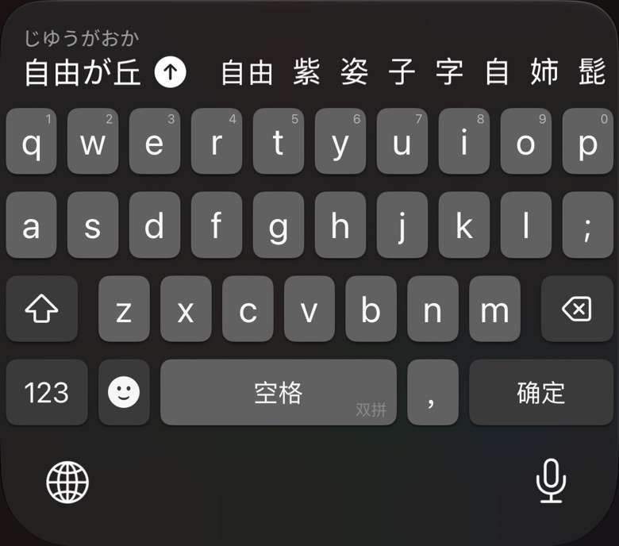

用拼音输入日文
日文里的汉字词，可以直接按它的中文拼音输入。比如「渋谷駅」按「涩谷站」的拼音 seguzhan 输入，不需要知道日文读音，也不需要另装日文键盘。乐言输入法在全拼、9键、双拼、五笔、手写和语音下都能输出日文。
1切换到日文
在乐言输入法键盘上点击候选栏的设置按钮，把「简 | 繁 | 日」切换到「日」。切换后继续使用原来的输入方案即可，不需要在 App 里另外设置。
日文对全拼（26键、9键）、各种双拼和五笔有效。粤拼下「日」不可选；日文罗马字布局本身就输出日文，这一格不可切换。
2按汉字的拼音输入
按日文汉字对应的中文拼音连续输入，首选就是日文。词里的假名（如「が」）不用单独输入。
| 输入方案 | 输入 | 首选 |
|---|---|---|
| 全拼 | seguzhan | 渋谷駅 |
| 全拼 | dongjing | 東京 |
| 微软双拼 | zi yb vi qq | 自由が丘 |
| 搜狗双拼 | se gu vj | 渋谷駅 |
| 五笔86 | jsyg | 日本語 |
| 五笔86 | ivyhwwkfccfh | 渋谷駅 |

五笔按每个汉字的简体字形编码，也可以输入词组编码；送り仮名不用输入，例如 wyve 的候选里有「食べる」。片假名词在五笔下无法输入。
3核对假名读音
候选上方显示首选的假名读音，方便确认这个词在日文里怎么读。例如「東京」显示「とうきょう」，「会社に行きます」显示「かいしゃ に いき ます」。
4改词和上屏
和输入中文一样：按空格或回车上屏首选；首选里个别词不对时，点击它在弹出的候选里单独替换，其余部分无需重新选择。具体操作见逐字改选和上屏。
输入日文时同样会学习你的输入习惯。拼音输入日文和日文罗马字布局共用同一份学习记录。
5手写和语音
切换到「日」后，手写的汉字会转成日文词，读音行显示假名。例如手写「人人」得到「人々」。
开启“完全访问”后，按住空格约 0.5 秒进行语音输入。在全拼、9键和双拼下，中文语音识别的结果按拼音转成日文，和输入拼音的效果相同。
6日文罗马字布局
熟悉日文读音的话，也可以把输入方案切换为日文罗马字，按罗马字输入。支持整句输入，例如 kyouhaiitenkidesu 得到「今日はいい天気です」；也支持只输入辅音的缩写，例如 smmsn 得到「すみません」，sbyk 得到「素早く」。
7说明
- 日文不做繁体转换，「简 | 繁 | 日」三档互斥。
- 9键下，拼音列只列出日文词典里有的读音。
- 日文词典、语言模型都在手机本地，输入日文同样不联网。